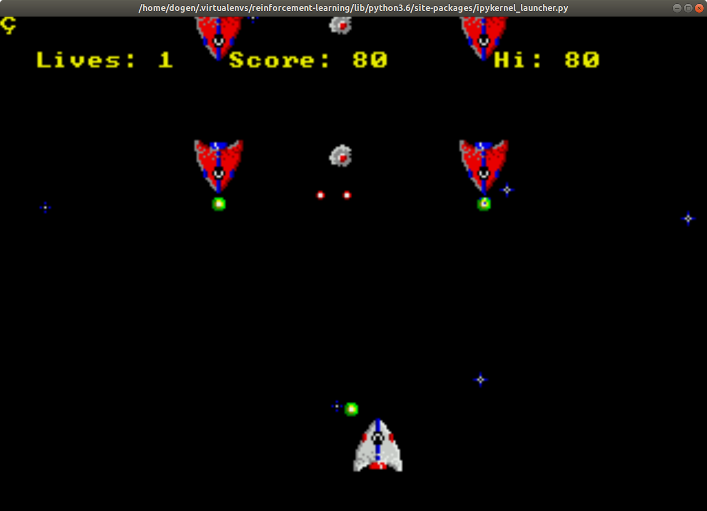

OpenAI Retro Introduction
Introduction
OpenAI Retro turns video game emulators into gym environments. This allows you to train a learner using video games from supported consoles (like the Atari 2600).
Imports
Instead of importing gym in this case you import retro.
# from pypi
import retro
The Environment
It looks a lot like the way you run gym. First you make the environment and reset it.
environment = retro.make(game="Airstriker-Genesis", state="Level1")
observation = environment.reset()
You can see all the available games using retro.list_games().
for game in retro.list_games()[:5]:
print(game)
: BankHeist-Atari2600 : SuperThunderBlade-Genesis : DynamiteHeaddy-Genesis : GalaxyForceII-Genesis : SonicTheHedgehog-Genesis
To see the available initial states you use retro.list_states.
print(retro.list_states("Airstriker-Genesis"))
: ['Level1']
So in this case there's only one option for us.
Running It
As with the gym environments, with retro you sample the environment to get the next action and then pass it to the step method.
for step in range(1, 10**3):
environment.render()
action = environment.action_space.sample()
observation, reward, done, info = environment.step(action)
if done:
print("It took {} steps to finish this episode".format(step))
break
When you run it it will pop up a screen showing the game being played (sped up four times).
